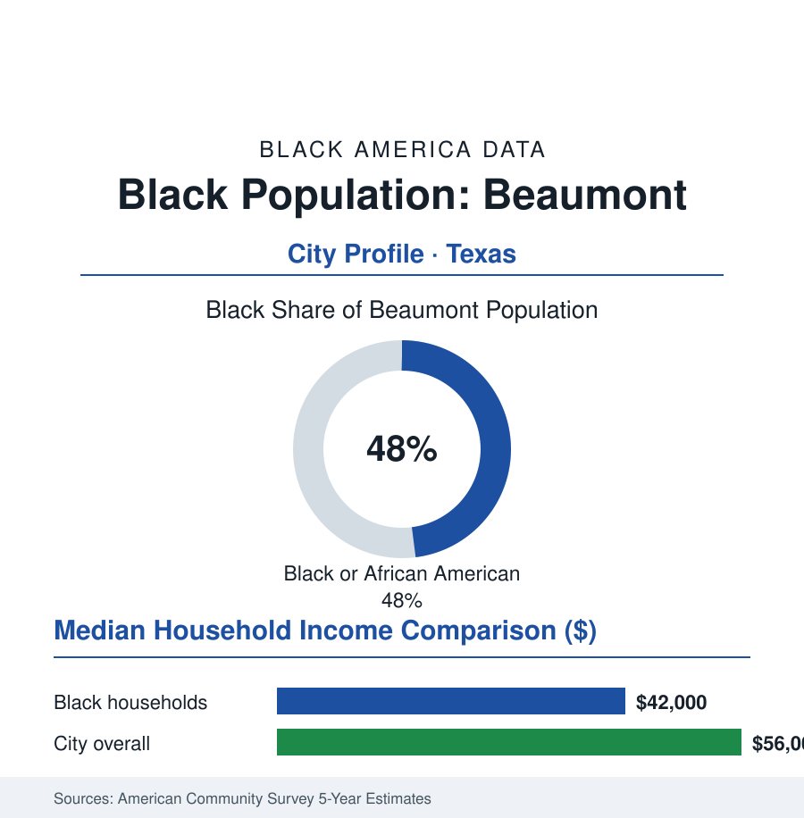

Black Cities
Black Beaumont: 55,000 People in the Golden Triangle
Beaumont's Black community, about 55,000 and nearly half the city, was built by Spindletop's oil and the refinery corridor — and anchors Texas's Golden Triangle. The census portrait.

Beaumont's Black community numbers approximately 55,000 people — about 48% of the city's 115,000 residents — in the Southeast Texas oil city where Spindletop's 1901 gusher opened the modern petroleum age. Black Beaumont built itself alongside the refineries and the port, in the neighborhoods north and west of the tracks, and its institutions — a major Black church tradition, Lamar University's hometown base, and a political establishment that has held the mayor's office — anchor the Golden Triangle's largest city. This profile reads the oil city's numbers.
Spindletop's City and the Refinery Corridor
The gusher at Spindletop made Beaumont overnight: the boomtown of 1901 (the population tripling in months in the census record) drew workers of every origin to the oilfield, the refineries that followed (the Magnolia, the Texas Company's Port Arthur works down the road, the Gulf corridor), and the port and rail complex on the Neches. Black Texans and Louisianans — the border country mixing both states' Black cultures, the zydeco and blues corridor running through it — built the community in the North End and the west side (the Pear Orchard district among the historic neighborhoods of the record), working the refineries' labor gangs and the port's docks under the era's job ceilings (the operating and craft tiers of the plants rationed in the pattern the employment file knows), the union era's refinery locals becoming, as in every Gulf town of this atlas, both ladder and battleground. The economy's later chapters are the region's: the petrochemical corridor's continued scale (the Golden Triangle's plants among the largest complexes on earth), the port's military and bulk cargo, the boom-bust cycles priced into the region's data in oil's own rhythm, and the storm ledger of the Gulf file (Rita, Harvey's record rain on the Triangle, Laura — the recovery data's maps drawn over the same neighborhoods, the buyout and elevation programs' tracts in the North End's low ground).
Institutions: Churches, Lamar, and the Music
The institutional map is full: Black Beaumont's church tradition (congregations whose histories run to the boom's first decade), its NAACP chapter of the Texas movement's record, the school district (Beaumont ISD, majority Black and Latino, its governance and state-intervention chapters of the 2010s in the education record — the TEA conservatorship years and the elected board's restoration, the community's sovereignty fight in school form), and Lamar University (the hometown university, its Black enrollment among the highest shares of any Texas public university outside the HBCUs — the Triangle's first-generation engine, its nursing and engineering programs feeding the plants and hospitals). The cultural record carries a signature contribution out of proportion to the city's size: Beaumont's music (Barbara Lynn, the left-handed guitarist whose 'You'll Lose a Good Thing' topped the charts from the North End's own scene; the blues and zydeco circuit of the Triangle's clubs; Johnny Winter and Janis Joplin from neighboring Port Arthur in the same Gulf stew) — and the community's museums and markers now formalizing the record (the historical commissions' African American heritage trails of the recent years).
The Economic Ledger
The ACS data price the petrochemical bargain: Black median household income in the low forty-thousands against a city median in the mid fifty-thousands; the refinery and plant wages at the top of the blue-collar table for the households that hold them (the process-operator tier's six-figure seniority — the plants' Black operators' share the plants' own slow-changing data), against the service economy around the plants at the region's ordinary rates; homeownership in the middle ranges (the North End's and Pear Orchard's stock, its values and its flood-zone insurance file the Gulf's shared problem). The workforce in the record: the plants and their contractor armies first, the port and logistics, the health systems (Baptist Hospital and the Medical Center of Southeast Texas), Lamar and the schools, the public sector. The environmental ledger stands in the data where this atlas always finds it: the fence-line neighborhoods' exposure studies (the Triangle's air-monitoring and health literature among the Gulf's foundational environmental-justice documents), the plant-expansion and permit fights of the current record conducted by the North End's own organizations with the monitoring data in hand.
Reading Beaumont's Numbers
Nearly half an oil capital, a university that takes its own, a music the world knows, and the fence-line's data kept by the neighbors themselves: Beaumont is the Gulf file's complete entry — the boom's riches and residues measured in the same tracts, by a community that has lived at the industry's gate for a hundred and twenty-five years and reads its gauges as well as anyone alive. Spindletop started the modern age. The North End has the receipts.
More in Black Cities
Black Atlanta: Population, Distribution, and Growth of a Black Metropolis
Metro Atlanta holds more than two million Black residents — roughly one in three, second only to New York. The suburban distribution, migration history, and composition of Black Atlanta in the census data.
Black New York: The Largest Black Population in America
The New York metropolitan area holds about 3.4 million Black residents — more than any metro in the nation — and the city itself about two million. The census profile.
Black Washington: The District and the Metro
The Washington metro holds about 1.6 million Black residents, and the District itself — long a majority-Black city — now records a Black share near 41 percent. The census profile.
Source: U.S. Census Bureau, 2020 Census and American Community Survey 5-year estimates; City of Beaumont; Lamar University and Texas State Historical Association records.